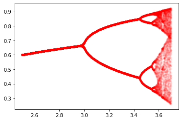

Logistic Map
Logistic Map
The famous logistic map is a recurrence relation or polynomial mapping of degree 2. It is a nonlinear difference equation capable of capturing complex nonlinear dynamical behavior including chaos. This map was popularized by the biologist Robert May in a Nature article written in 1976. Sadly, Robert May has passed away recently on April 28, 2020. The equation is as follows:
$$x_{n+1} = r x_n (1 - x_n)$$
The parameter $r$ controls the behavior of the system. It turns out that $r=3.6$ is starting to reach the point of chaos.
Preamble
from pylab import *
Defining Logistic Map
def f(x, r):
return r*x*(1-x)
Period Doubling Bifurcation $(r = 3.1)$
x = 0.01
r = 3.1
xdata = [x]
for t in range(100):
x = f(x, r)
xdata.append(x)
plot(xdata, 'r.');

Creating Bifurcation Diagram
rvalues = []
xvalues = []
for r in linspace(2.5, 3.7, 500):
x = 0.01
for t in range(200):
x = f(x, r)
if t > 100:
rvalues.append(r)
xvalues.append(x)
plot(rvalues, xvalues, 'r.', alpha = 0.05);
